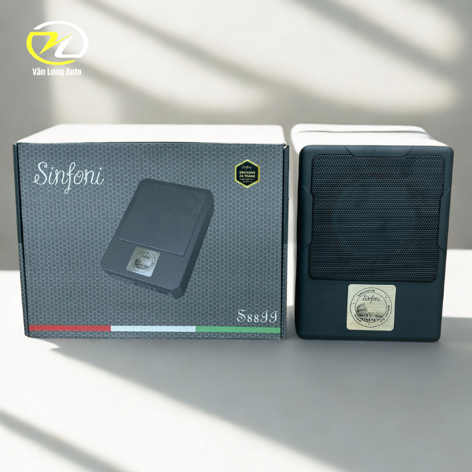
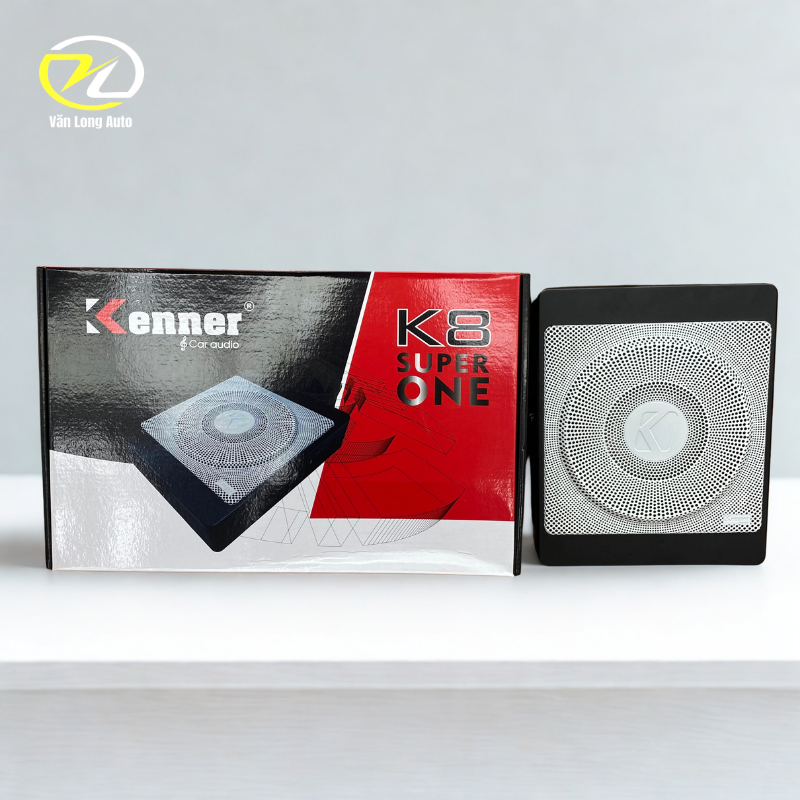
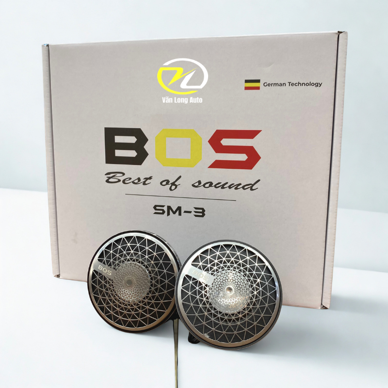
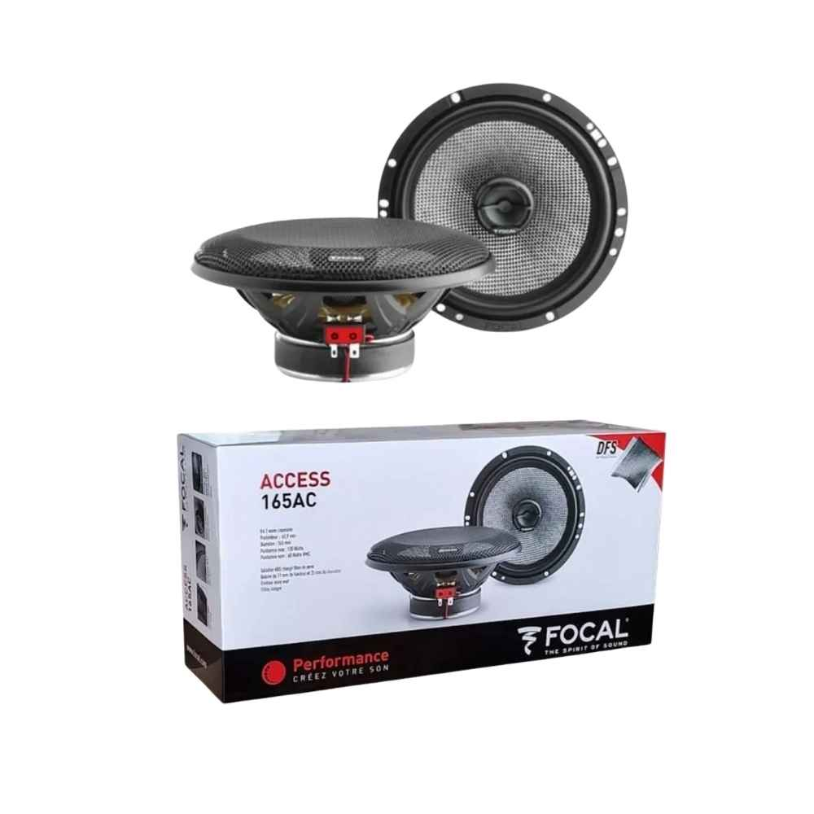
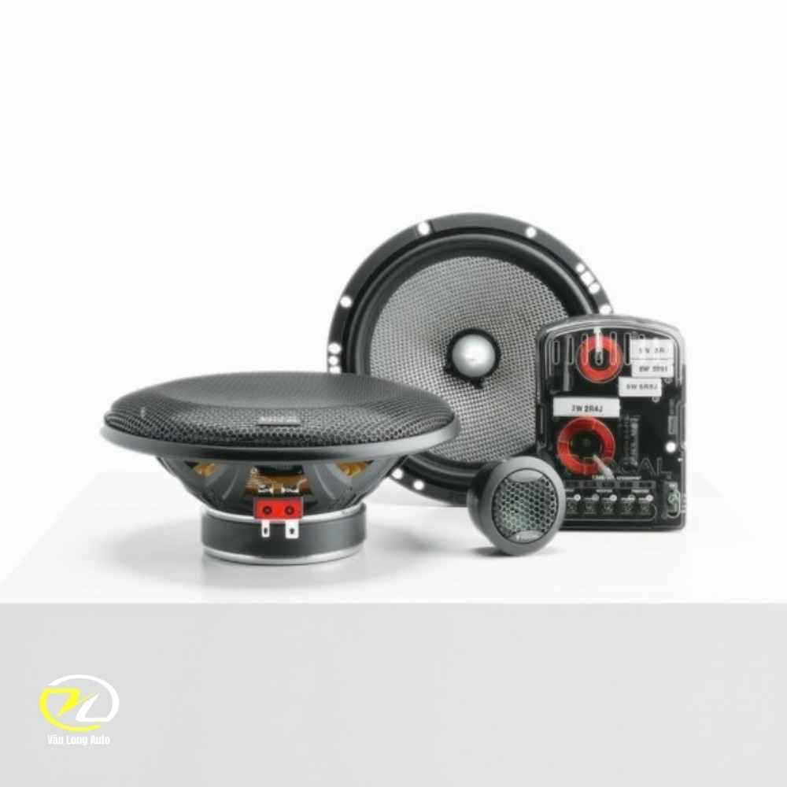
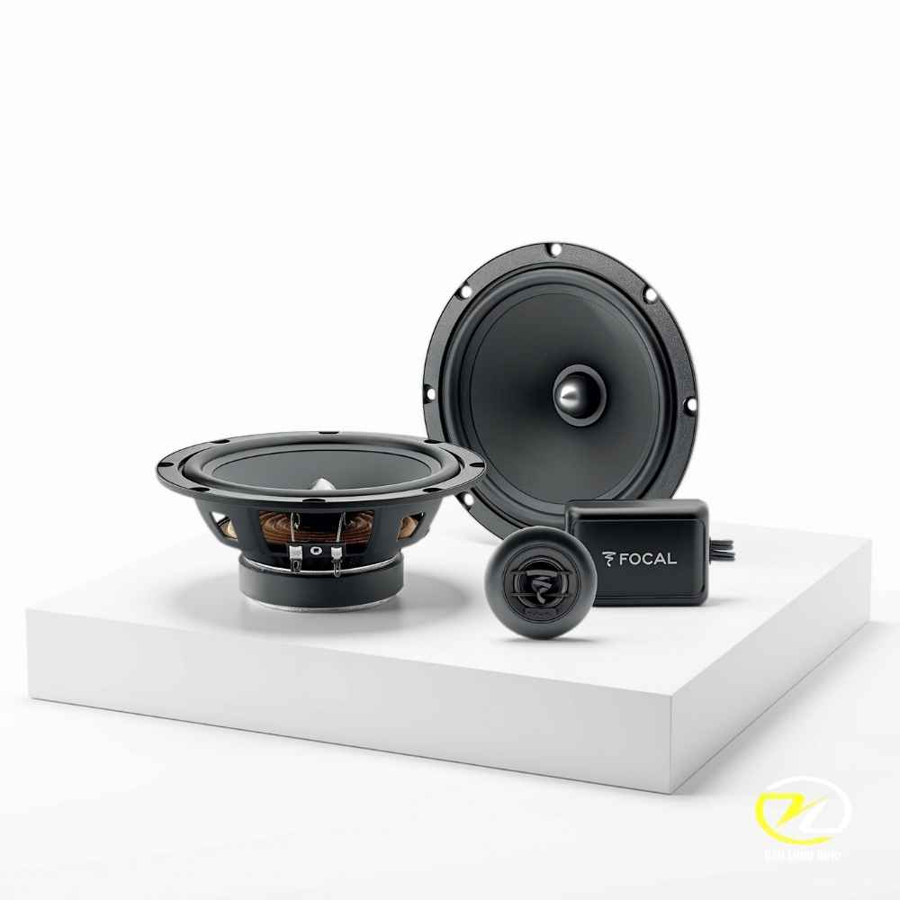
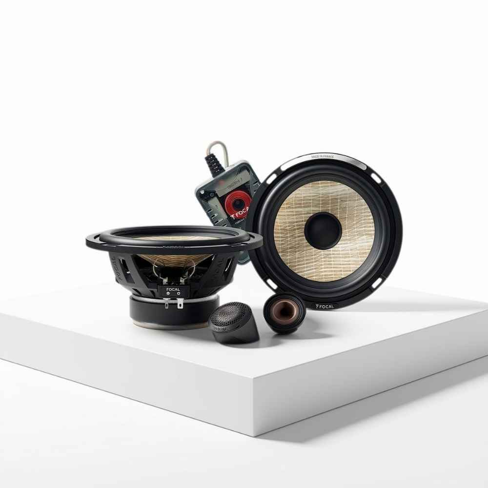

Sub Điện I-Sotec B+A 6 Tích Hợp Amply DSP 8 Kênh
10.500.000đ
Nâng cấp âm thanh ô tô đỉnh cao cùng Văn Long Auto. Nâng tầm trải nghiệm giải trí trên xe hơi thông qua dịch vụ độ âm thanh đang là xu hướng được rất nhiều chủ xe đặc biệt quan tâm. Tuy nhiên, để tạo ra một không gian âm nhạc đồng bộ và chân thực không phải là một bài toán đơn giản. Tại Văn Long Auto, với đội ngũ kỹ thuật viên giàu kinh nghiệm, chúng tôi cam kết mang đến cho bạn những giải pháp nâng cấp âm thanh chuyên sâu, tối ưu hóa chất lượng dựa trên đúng mức ngân sách mà bạn mong muốn.
Cá nhân hóa mọi cấu hình âm thanh. Hệ thống âm thanh trên xe sẽ được Văn Long Auto thiết kế linh hoạt thành nhiều hạng mục chuyên biệt. Dù bạn cần nâng cấp loa cánh, bổ sung loa sub siêu trầm, thêm amply để kéo công suất hay tinh chỉnh dải âm bằng bộ xử lý tín hiệu DSP, chúng tôi đều có quy trình thi công chuẩn xác. Sự phối hợp khắt khe giữa các thiết bị không chỉ giúp triệt tiêu nhiễu âm, ổn định nguồn điện mà còn đẩy hiệu suất hoạt động lên mức cao nhất, đảm bảo độ bền bỉ theo thời gian.
Đa dạng sự lựa chọn cho mọi gu âm nhạc. Văn Long Auto cung cấp hàng loạt các gói nâng cấp âm thanh từ cơ bản đến cao cấp, đáp ứng trọn vẹn mọi nhu cầu và sở thích cá nhân. Việc của bạn chỉ là chia sẻ thể loại nhạc yêu thích và gu thưởng thức của mình; phần còn lại, các chuyên gia của chúng tôi sẽ tư vấn và kiến tạo nên một không gian hòa nhạc sống động, mang đậm dấu ấn cá nhân ngay trên chính chiếc xế cưng của bạn.










